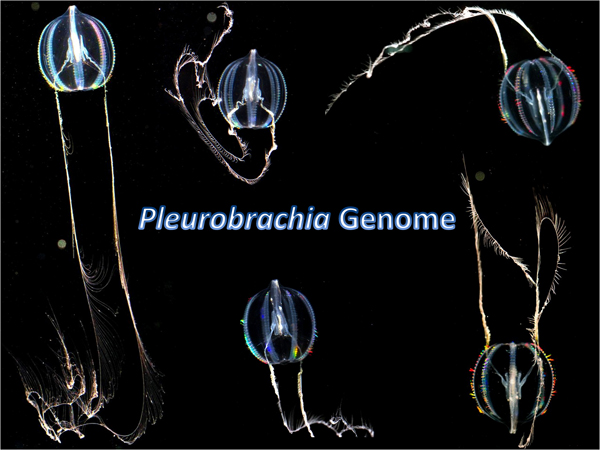

The Ctenophore Genome Reveals Independent Evolution of Nervous Systems
The evolutionary relationships among the five major animal lineages (Sponges, Placozoa, Cnidaria, Ctenophora and Bilateria) and the origin of neural systems remain unresolved. In contrast to other basal metazoans, ctenophores, or comb jellies, have both complex nervous and “true” mesoderm-derived muscular systems as in bilaterians. These holoplanktonic predators also have sophisticated ciliated locomotion and behaviour, unique glue-based capture mechanisms and distinct development. However, until today the lack of genomic resources has prevented understanding of these animals despite their diversity and evolutionary importance. Here, we sequence the Pacific Sea Gooseberry (Pleurobrachia bachei) genome and identify ~19,600 gene models, 96% of which are supported by transcriptome data. Our phylogenomic analysis places Ctenophores as the earliest lineage within the animal tree, sister to all Metazoa; with sponges (Porifera) as the next branching, secondarily morphologically simplified group. This hypothesis is further supported by comparative analysis of multiple gene families, including the apparent absence of HOX genes, canonical microRNA machinery, and reduced immune complement in Pleurobrachia. Although two distinct nervous systems and an “elementary brain, are well-recognized in ctenophores, many bilaterian neuron-specific genes and “classical” neurotransmitter pathways either are not present or, if present, are not expressed in neurons. Combined, these data suggest that at least some of the ctenophore neural populations were evolved independently from those in other animals. Thus, the observed development of different signalling pathways to support complex integrative functions can be used for the needs of synthetic biology and regenerative medicine.